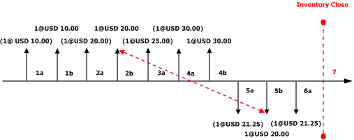

LIFO mit physischem Wert und Markierung
Important
Dynamics 365 for Finance and Operations hat sich zu speziell entwickelten Anwendungen entwickelt, mit denen Sie bestimmte Geschäftsfunktionen verwalten können. Weitere Informationen zu diesen Änderungen finden Sie im Dynamics 365-Lizenzierungshandbuch.
Bei LIFO (Last in, First out) handelt es sich um ein Lagermodell, bei dem die zuletzt eingegangenen Zugänge das Lager als Erstes wieder verlassen. Abgänge aus dem Lager werden mit den neuesten Zugängen im Lager auf der Grundlage des Datums der Lagerbuchung abgeglichen.
Im LIFO (Last in, First out) Lagermodell, verlassen die zuletzt eingegangenen (neuesten) Zugänge das Lager zuerst. Abgänge aus dem Lager werden mit den neuesten Zugängen zu einem Lagerbestand abgeglichen, basierend auf dem Datum der Lagerbuchung. Wenn Sie LIFO verwenden, müssen Sie die LIFO-Regel nicht verwenden. Stattdessen können Lagerbuchungen markiert werden, damit ein bestimmter Artikelabgang mit einem bestimmten Zugang ausgeglichen wird. Es wird empfohlen, einen regelmäßigen Lagerabschluss durchzuführen, wenn Sie das Lagermodell LIFO verwenden.
In den folgenden Beispielen werden die Auswirkungen der Verwendung von LIFO anhand von drei unterschiedlichen Konfigurationen veranschaulicht:
- LIFO ohne die Option Physischen Wert einbeziehen
- LIFO mit der Option Physischen Wert einbeziehen
- LIFO mit Markierung
LIFO ohne die Option "Physischen Wert einbeziehen"
In diesem Beispiel ist die Artikelmodellgruppe so konfiguriert, dass der physische Wert nicht einbezogen wird. Die folgende Abbildung zeigt diese Buchungen an:
- 1a. Physischer Lagerzugang für die Menge "1" zu jeweils EUR 10,00 (Kosten).
- 1b. Wertmäßiger Lagerzugang für die Menge "1" zu jeweils EUR 10,00 (Kosten).
- 2a. Physischer Lagerzugang für die Menge "1" zu jeweils EUR 20,00 (Kosten).
- 2b. Wertmäßiger Lagerzugang für die Menge "1" zu jeweils EUR 20,00 (Kosten).
- 3a. Physischer Lagerzugang für die Menge "1" zu jeweils EUR 25,00 (Kosten).
- 4a. Physischer Lagerzugang für die Menge "1" zu jeweils EUR 30,00 (Kosten).
- 4b. Wertmäßiger Lagerzugang für die Menge "1" zu jeweils EUR 30,00 (Kosten).
- 5a. Physischer Lagerabgang für die Menge "1" zu einem Einstandspreis von EUR 20,00 (laufender Durchschnitt wertmäßig aktualisierter Buchungen).
- 5b. Wertmäßiger Lagerabgang für die Menge "1" zu einem Einstandspreis von EUR 20,00 (laufender Durchschnitt wertmäßig aktualisierter Buchungen).
-
- Lagerabschluss wird vorgenommen. Der letzte wertmäßig aktualisierte Abgang wird auf Basis der LIFO-Methode mit dem letzten wertmäßig aktualisierten Zugang ausgeglichen. Für die Abgangsbuchung erfolgt eine Regulierung in Höhe von EUR 10,00.
Der neue laufende Durchschnittseinstandspreis stellt den Durchschnitt der wertmäßig aktualisierten Buchungen in Höhe von EUR 15,00 dar. Die folgende Abbildung zeigt die Auswirkungen des Lagermodells LIFO auf diese Buchungsserie an, wenn die Option Physischen Wert einbeziehen nicht verwendet wird.

Diagrammschlüssel
- Lagerbuchungen sind durch vertikale Pfeile dargestellt.
- Zugänge zum Lager sind als vertikale Pfeile über der Zeitachse dargestellt.
- Abgänge aus dem Lager sind als vertikale Pfeile unter der Zeitachse dargestellt.
- Über (oder unter) den einzelnen vertikalen Pfeilen ist im Format "Menge@Einheitenpreis" der Wert der Lagerbuchung angegeben.
- Ein in Klammern gesetzter Lagerbuchungswert weist darauf hin, dass die Lagerbuchung physisch in das Lager gebucht wurde.
- Ein nicht in Klammern gesetzter Lagerbuchungswert weist darauf hin, dass die Lagerbuchung wertmäßig in das Lager gebucht wurde.
- Jede neue Zugangs- oder Abgangsbuchung wird mit einer neuen Beschriftung versehen.
- Jeder vertikale Pfeil ist mit einer Sequenzkennung (beispielsweise 1a) versehen. Mit dieser Kennung wird die Reihenfolge der Lagerbuchungen auf der Zeitachse angegeben.
- Lagerabschlüsse sind durch eine vertikale rote gestrichelte Linie und die Beschriftung Lagerabschluss gekennzeichnet.
- Ein durch einen Lagerabschluss vorgenommener Ausgleich ist durch rote diagonale gestrichelte Pfeile dargestellt, die von einem Zugang zu einem Abgang verlaufen.
LIFO mit der Option "Physischen Wert einbeziehen"
Wenn auf der Seite Artikelmodellgruppen das Kontrollkästchen Physischen Wert einbeziehen aktiviert ist, verwendet das System zur Berechnung des laufenden Durchschnittseinstandspreises sowohl physische als auch wertmäßige Zugangsbuchungen. Gegebenenfalls werden auch Regulierungen an der physisch aktualisierten Abgangsbuchung vorgenommen. Ist das Kontrollkästchen Physischen Wert einbeziehen deaktiviert, werden bei einem Lagerabschluss mit dem Lagermodell "LIFO" lediglich die Transaktionen ausgeglichen, die wertmäßig aktualisiert sind.
Die folgende Abbildung zeigt diese Buchungen an:
- 1a. Physischer Lagerzugang für die Menge "1" zu jeweils EUR 10,00 (Kosten).
- 1b. Wertmäßiger Lagerzugang für die Menge "1" zu jeweils EUR 10,00 (Kosten).
- 2a. Physischer Lagerzugang für die Menge "1" zu jeweils EUR 20,00 (Kosten).
- 2b. Wertmäßiger Lagerzugang für die Menge "1" zu jeweils EUR 20,00 (Kosten).
- 3a. Physischer Lagerzugang für die Menge "1" zu jeweils EUR 25,00 (Kosten).
- 4a. Physischer Lagerzugang für die Menge "1" zu jeweils EUR 30,00 (Kosten).
- 4b. Wertmäßiger Lagerzugang für die Menge "1" zu jeweils EUR 30,00 (Kosten).
- 5a. Physischer Lagerabgang für die Menge "1" zu einem Einstandspreis von jeweils EUR 21,25 (laufender Durchschnitt wertmäßig und physisch aktualisierter Buchungen).
- 5b. Wertmäßiger Lagerabgang für die Menge "1" zu einem Einstandspreis von jeweils EUR 21,25 (laufender Durchschnitt wertmäßig und physisch aktualisierter Buchungen).
- 6a. Physischer Lagerabgang für die Menge "1" zu einem Einstandspreis von jeweils EUR 21,25.
-
- Lagerabschluss wird vorgenommen. Die letzte Abgangsbuchung wird auf Basis der LIFO-Methode reguliert oder mit dem letzten aktualisierten Zugang ausgeglichen.
Die Buchung 6a wird mit der Zugangsbuchung 4b reguliert. Diese Buchungen werden vom System nicht ausgeglichen, da der Zugang nur physisch, nicht aber wertmäßig aktualisiert wurde. Stattdessen erfolgt lediglich eine Regulierungsbuchung in Höhe von EUR 8,75 für die physische Abgangsbuchung. Die Buchung 5b wird mit der physischen Zugangsbuchung 3a reguliert. Diese Buchungen werden vom System nicht ausgeglichen, da nicht für beide eine wertmäßige Aktualisierung erfolgt ist. Stattdessen wird für diese Abgangsbuchung lediglich eine Regulierung in Höhe von EUR –3,75 vorgenommen. Im neuen laufenden Durchschnittseinstandspreis ist der Durchschnitt der wertmäßig und physisch aktualisierten Buchungen in Höhe von EUR 20,00 berücksichtigt.
Die folgende Abbildung zeigt die Auswirkungen des Lagermodells LIFO für diese Buchungsserie an, wenn die Option Physischen Wert einbeziehen verwendet wird.

Diagrammschlüssel
- Lagerbuchungen sind durch vertikale Pfeile dargestellt.
- Zugänge zum Lager sind als vertikale Pfeile über der Zeitachse dargestellt.
- Abgänge aus dem Lager sind als vertikale Pfeile unter der Zeitachse dargestellt.
- Über (oder unter) den einzelnen vertikalen Pfeilen ist im Format "Menge@Einheitenpreis" der Wert der Lagerbuchung angegeben.
- Ein in Klammern gesetzter Lagerbuchungswert weist darauf hin, dass die Lagerbuchung physisch in das Lager gebucht wurde.
- Ein nicht in Klammern gesetzter Lagerbuchungswert weist darauf hin, dass die Lagerbuchung wertmäßig in das Lager gebucht wurde.
- Jede neue Zugangs- oder Abgangsbuchung wird mit einer neuen Beschriftung versehen.
- Jeder vertikale Pfeil ist mit einer Sequenzkennung (beispielsweise 1a) versehen. Mit dieser Kennung wird die Reihenfolge der Lagerbuchungen auf der Zeitachse angegeben.
- Lagerabschlüsse sind durch eine vertikale rote gestrichelte Linie und die Beschriftung Lagerabschluss gekennzeichnet.
- Ein durch einen Lagerabschluss vorgenommener Ausgleich ist durch rote diagonale gestrichelte Pfeile dargestellt, die von einem Zugang zu einem Abgang verlaufen.
LIFO mit Markierung
Der Begriff "Markierung" bezeichnet ein Verfahren zum Verknüpfen (oder Markieren) einer Abgangsbuchung mit einer Zugangsbuchung. Eine Markierung kann entweder vor oder nach Ausführung der Buchung erfolgen. Durch die Verwendung einer Markierung lassen sich bei der Ausführung der Buchung oder des Lagerabschlusses die exakten Kosten des Lagers ermitteln. Beispiel: In der Kundendienstabteilung wurde der Eilauftrag eines wichtigen Debitors angenommen. Da es sich bei diesem Auftrag um einen Eilauftrag handelt, müssen Sie für diesen Artikel einen höheren Preis bezahlen, um dem Wunsch des Debitors zu entsprechen.
Deshalb müssen Sie sicherstellen, dass bei dieser Auftragsrechnung die Kosten für diesen Lagerartikel in der Gewinnspanne bzw. im Wareneinsatz (COGS/cost of goods sold) berücksichtigt werden. Bei der Buchung des Auftrags erhält das Lager einen Zugang in Höhe von EUR 120,00 (Kosten). Wird dieses Auftragsdokument vor der Buchung des Lieferscheins oder der Rechnung für die Bestellung markiert, beträgt der Wareneinsatz EUR 120,00 (statt der aktuellen laufenden Durchschnittskosten für den Artikel). Wird der Lieferschein oder die Rechnung des Auftrags gebucht, bevor die Markierung vorgenommen wird, erfolgt die Buchung des Wareneinsatzes (COGS) zum laufenden Durchschnittseinstandspreis.
Die Markierung der beiden Buchungen kann noch bis zur Ausführung des Lagerabschlusses nachgeholt werden.
Sie können vor der Ausführung der Buchung eine Abgangsbuchung für einen Zugang markieren. Dies kann von einer Auftragsposition auf der Seite Auftragsdetails aus erfolgen. Sie können die offenen Zugangsbuchungen auf der Seite Markierung anzeigen.
Sie können auch nach der Buchung der Transaktion eine Abgangsbuchung für einen Zugang markieren. Sie können eine Abgangsbuchung für eine offene Zugangsbuchung für einen gelagerten Artikel aus einer gebuchten Lagerregulierungserfassung abgleichen oder markieren.
Die folgende Abbildung zeigt diese Buchungen an:
- 1a. Physischer Lagerzugang für die Menge "1" zu jeweils EUR 10,00 (Kosten).
- 1b. Wertmäßiger Lagerzugang für die Menge "1" zu jeweils EUR 10,00 (Kosten).
- 2a. Physischer Lagerzugang für die Menge "1" zu jeweils EUR 20,00 (Kosten).
- 2b. Wertmäßiger Lagerzugang für die Menge "1" zu jeweils EUR 20,00 (Kosten).
- 3a. Physischer Lagerzugang für die Menge "1" zu jeweils EUR 25,00 (Kosten).
- 4a. Physischer Lagerzugang für die Menge "1" zu jeweils EUR 30,00 (Kosten).
- 4b. Wertmäßiger Lagerzugang für die Menge "1" zu jeweils EUR 30,00 (Kosten).
- 5a. Physischer Lagerabgang für die Menge "1" zu einem Einstandspreis von jeweils EUR 21,25 (laufender Durchschnitt wertmäßig und physisch aktualisierter Buchungen).
- 5b. Wertmäßiger Lagerabgang für die Menge "1" wird für den Lagerzugang aus 2b markiert, bevor die Buchung ausgeführt wird. Diese Buchung erfolgt zu einem Einstandspreis von jeweils EUR 20,00.
- 6a. Physischer Lagerabgang für die Menge "1" zu einem Einstandspreis von jeweils EUR 21,25.
-
- Lagerabschluss wird vorgenommen. Da die wertmäßig aktualisierte FIFO-Buchung für einen vorhandenen Zugang markiert ist, werden diese Buchungen gegenseitig ausgeglichen, und es ist keine Regulierung erforderlich.
Im neuen laufenden Durchschnittseinstandspreis ist der Durchschnitt der wertmäßig und physisch aktualisierten Buchungen in Höhe von EUR 27,50 berücksichtigt.
Die folgende Abbildung gibt Aufschluss über die Auswirkungen des LIFO-Lagermodells auf diese Reihe von Buchungen, die bei markierten Ab- und Zugängen anfallen.

Diagrammschlüssel
- Lagerbuchungen sind durch vertikale Pfeile dargestellt.
- Zugänge zum Lager sind als vertikale Pfeile über der Zeitachse dargestellt.
- Abgänge aus dem Lager sind als vertikale Pfeile unter der Zeitachse dargestellt.
- Über (oder unter) den einzelnen vertikalen Pfeilen ist im Format "Menge@Einheitenpreis" der Wert der Lagerbuchung angegeben.
- Ein in Klammern gesetzter Lagerbuchungswert weist darauf hin, dass die Lagerbuchung physisch in das Lager gebucht wurde.
- Ein nicht in Klammern gesetzter Lagerbuchungswert weist darauf hin, dass die Lagerbuchung wertmäßig in das Lager gebucht wurde.
- Jede neue Zugangs- oder Abgangsbuchung wird mit einer neuen Beschriftung versehen.
- Jeder vertikale Pfeil ist mit einer Sequenzkennung (beispielsweise 1a) versehen. Mit dieser Kennung wird die Reihenfolge der Lagerbuchungen auf der Zeitachse angegeben.
- Lagerabschlüsse sind durch eine vertikale rote gestrichelte Linie und die Beschriftung Lagerabschluss gekennzeichnet.
- Ein durch einen Lagerabschluss vorgenommener Ausgleich ist durch rote diagonale gestrichelte Pfeile dargestellt, die von einem Zugang zu einem Abgang verlaufen.